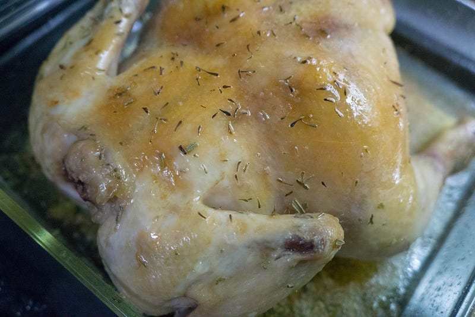
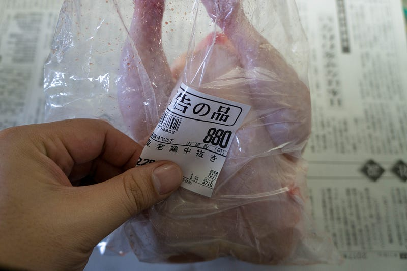
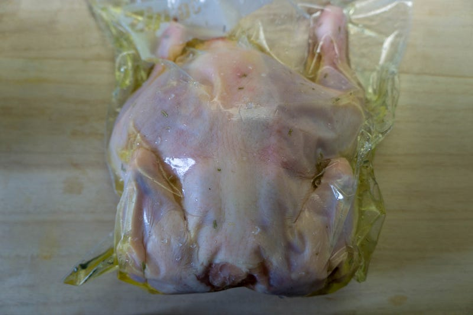
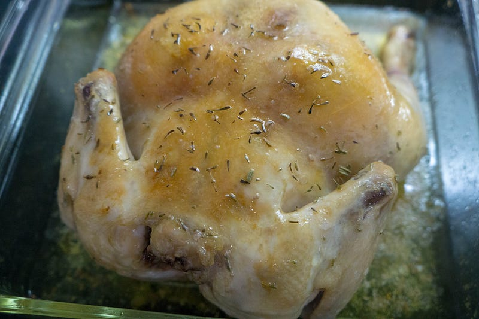

丸鶏を低温調理して丸焼きにする
丸鶏を低温調理して丸焼きにする
「クリスマスにチキンって習慣は、どうもなぁ〜」という硬派ぶった感じで今朝店に寄ったのだが、鯛を買いに行ったはずなのに、ふと見た丸鶏が880円で安かったのでふらふら〜っと買ってしまった。
というわけでクリスマスなので鶏の丸焼きを作る。

お昼にやった鯛はこちら：
クリスマスに鶏肉を食べる習慣はないので（注：多分次のエントリでこの発言は覆されます）、クリスマスイブの昼食はanovaの低温調理は魚で攻める。しかも骨付き、丸ごとの鯛。medium.com
毎度毎度だけど、anovaはこちら。
丸鶏は以前から時折焼いて食べていたが、鯛のエントリにも書いたようにこの手のものは火加減が異常に難しい。しっとりさせつつ、ちゃんと火を通して、とかもう完全に匠の技の世界だ。
そこでいつかanovaで低温調理をしてやろうと思ってはいた。
しかし問題は中抜きされた後の鶏肉の内部の空間である。鯛と違って、結構な空洞があるし、空間があっては火が均一に通りにくくなる。それに真空パックを水圧で行っている自分的には大分辛い。
空間を無くしてしまうために鶏を半分に切ってしまう、という手もあるのだが、あくまで丸鶏に拘りたい。この解決方法を見いだせなくて敬遠していたのだった。
だが今日、880円の値段を見ながら店でおもいついたのだ：「空間は熱伝導効率の良い油で満たしてしまえばいいではないか！」と。
要はコンフィ的に下処理をしてしまえばいいのだ。

というわけで、洗って、塩をしてしばらく置いたあと、鶏肉、ローズマリー、そして油（オリーブオイルとサラダ油の混合油）をジップロックに入れる。
水圧と油だけでここまで真空パックに近い状態にできる。

60℃で4時間強。時間と温度はいつも参考にしてるSeriousEatsの情報を総合して勘で決めてみた。胸肉ともも肉、骨付き・無しで大分変わる感じなのだが、今回はこのサイトで提示されている温度の中では低め、時間は長めである。
What if I told you that chicken breast doesn't have to be bland? That it doesn't have to be dry, stringy, or insipid…www.seriouseats.com
Chicken thighs are forgiving enough as it is, so why bother cooking them sous vide? Because the method gives you…www.seriouseats.com
できあがったらオーブン250℃で20分。

パンといっしょに食べましょうね。
食感は狙い通り。プリプリの鶏肉より、しっとりとした、しかしホロホロの鶏肉を狙って、その通りにできた。
鯛のエントリでも書いたけど、とにかくanovaを使って下処理をしておくことにより、一切の匠の技術が必要なくなってしまう。この手の料理はできあがりがどうのこうのより、とにかく手間がかからない、という点において、コストパフォーマンスが圧倒的すぎる。というわけでこれもおいしく食べた。
クリスマスイブの連続ブログ投稿もこれでおしまい。なんだかたくさん料理をしたのでたくさん書いてしまった。
ちなみにデザートはこれな。